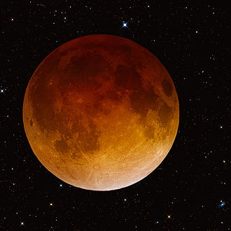
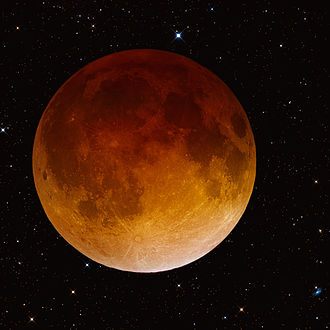

An eclipse is an astronomical event which occurs when an astronomical
objector spacecraft is temporarily obscured, by passing into
the shadow of another body or by having another body pass
between it and the viewer.
The term eclipse is most often used to describe either a solar
eclipse, when the Moon's shadow crosses the Earth's surface,
or a lunar eclipse, when the Moon moves into the Earth's
shadow.For the special cases of solar and lunar eclipses,
these only happen during an "eclipse season", the two
times of each year when the plane of the Earth's orbit
around the Sun crosses with the plane of the Moon's
orbit around the Earth and the line defined by the
intersecting planes points near the Sun.To see a
total solar eclipse, an observer must be within the
umbra. Observers in the penumbra will witness a
partial eclipse, with only part of the Sun covered by
the Moon. Those outside the Moon's shadow will see no
eclipse at all.That's because The Moon's shadow on Earth
isn't very big, so only a small portion of places on Earth
will see it.
Lunar eclipses can be viewed from the entire nightside half
of the Earth. But solar eclipses, particularly total eclipses
occurring at any one particular point on the Earth's surface,
are very rare events that can be many decades apart.